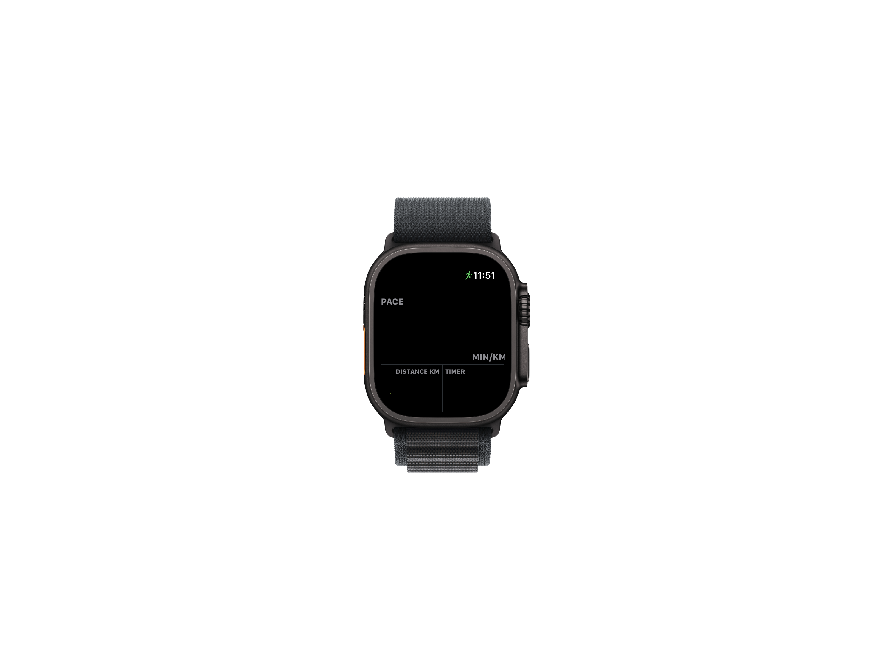
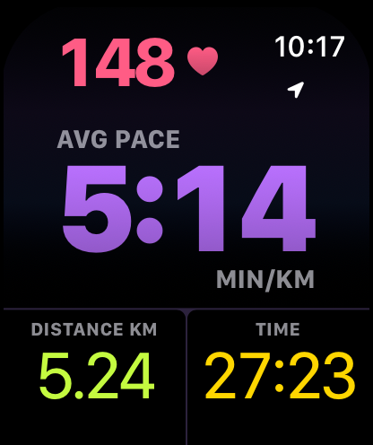
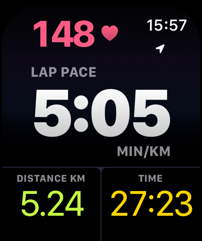
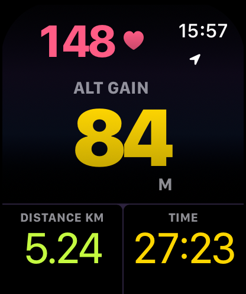
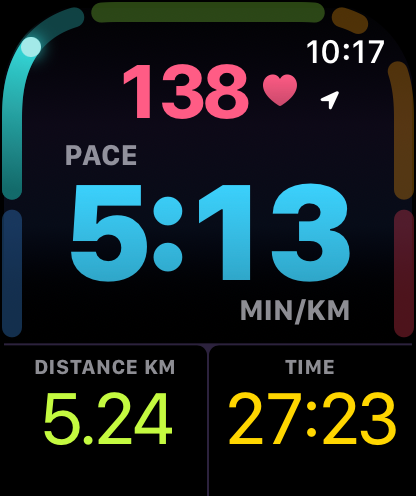

Runner
Your run. In full view.
Pace, heart rate, distance, and time at a glance on Apple Watch.
A clearer view
on your wrist.
Give your main metric the most room. Pick your colors and text weight on Apple Watch or iPhone, and leave your phone at home when you run.
Switch with Double Tap
Tap your thumb and index finger together twice to switch metrics on a compatible Apple Watch. You can also tap the main value on the screen.
Set up Double Tap





From track to trail.
See your GPS route colored by pace after an outdoor run. On the treadmill, Runner uses motion-based distance and pace.
Explore the technologyRunner Pro
Record runs and track your core metrics for free. The one-time upgrade adds lap pace, outdoor elevation gain, and heart rate zones.
All Metrics becomes Runner Pro in the next update. Existing purchases carry over.
About Runner ProHeart rate zones
See your current zone along the edge of the display and time in each zone after your run. Requires watchOS 27 or later.
About heart rate zonesCustom workouts
Coming in the next update. Build interval workouts for free on iPhone. With Runner Pro, follow them on Apple Watch with haptic cues on watchOS 27 or later.
About custom workoutsYour run stays yours.
Runner needs no account. The app has no ads or analytics, and sends us no health or location data.
Read the privacy policyRequires watchOS 26 or later. The companion app requires iOS 26 or later.